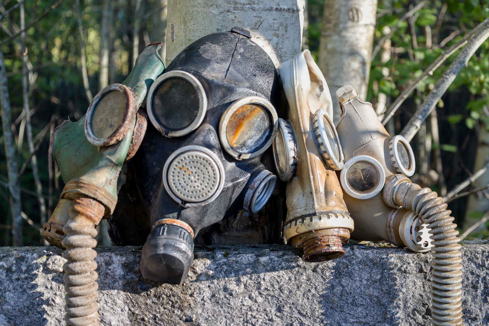

In the countryside of Latvia lies a dumping ground of Soviet-era preparation and paranoia. Once intended to protect Eastern Bloc citizens against potential nuclear or biological threats, piles of gas masks now sit abandoned. Recycling them is burdensome, so they have been left in neglected piles, exposed to the elements.
Hundreds of thousands of unused gas masks lie stacked between trees and a concrete fence. Once stored neatly in hundreds of wooden crates, they now form a vast pile, about the size of a basketball court and as tall as a person. While this may seem like a massive quantity, it’s likely only the supply from a couple of shelters.
Given the Cold War’s near five-decade span, the hundreds of Soviet gas mask models produced, and the short 24-hour lifespan of most filters, the vast number of masks manufactured is unknown. One can only wonder how many similar dumping grounds may exist across Eastern Europe.

GP-5: Inexpensive to produce and simple to distribute on a large scale, this mask was widely available during the Cold War era and often paired with the ShM-62 filter. Primarily intended for civilian use, it was manufactured from 1962 to 1990, with estimates indicating that total production quantity reached three times the Soviet Union’s 1990 population of 288.6 million. This mask provided up to 24 hours of protection from airborne contaminants, including chemical and radioactive particles.
DP-6: This mask features a unique design with a hose connecting to a filter rather than a direct attachment, as a direct connection would make the mask too heavy for children to wear comfortably. Filters were typically placed in the large pocket of a forward-facing backpack vest, allowing for easier mobility and less weight on the childs head and neck.
GP-7: A more advanced and user-friendly successor to the GP-5, this mask retains the "helmet-mask" design that covers the entire face. It features an improved filter port, a better exhalation valve, and anti-fog coating on the eye-pieces. Production began in 1988, with updated versions still being manufactured today. The original filters contained asbestos and arsenic; however, temporary exposure to these is still considered less harmful than getting caught up in chemical warfare without a mask.